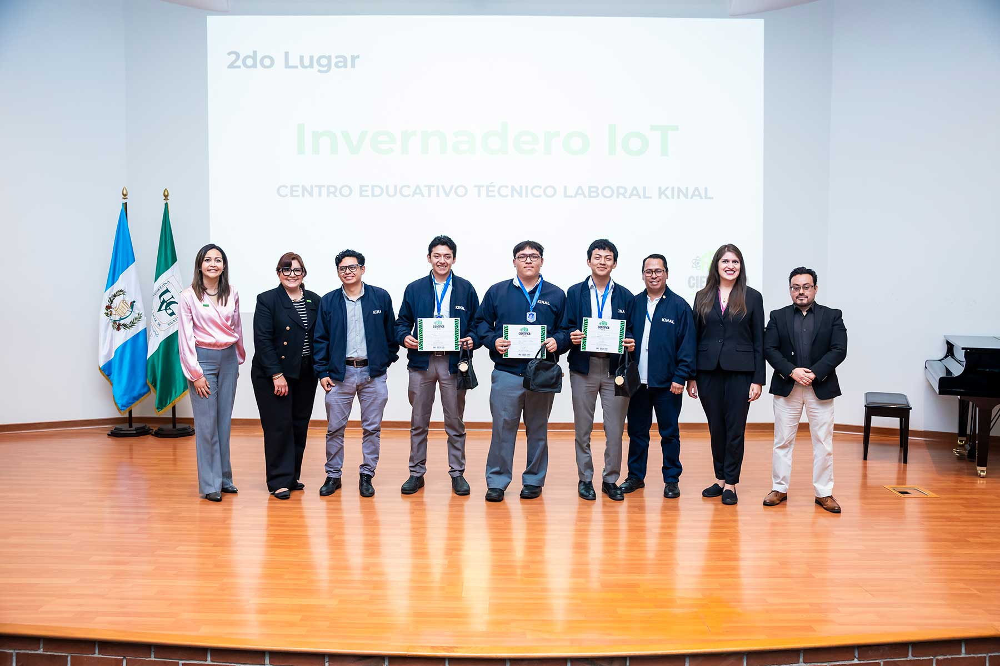

SEGUNDO LUGAR: FERIA CIENTÍFICA UVG
Estudiantes de Kinal destacan en la VII Feria Científica de Colegios con el proyecto "Invernadero IoT", demostrando excelencia en innovación tecnológica.


Formamos profesionales íntegros y confiables, con visión global y compromiso con el servicio a los demás.
Haz tu prueba de admisiónKinal es un Centro Educativo privado, no lucrativo, dirigido a la formación técnica profesional de jóvenes y adultos. Nuestro valor fundamental es enseñar a realizar el trabajo bien hecho.

Kinal ofrece su programa de Educación General Básica para aquellos jóvenes que buscan una orientación técnica y excelencia académica.
CONOCE MÁS
Durante 3 años se prepara al joven de forma técnica y académica, el egresado estará listo para trabajar en el ramo técnico elegido.
CONOCE MÁS
Contamos con más de 30 especialidades técnicas y tecnológicas que pueden favorecer tu crecimiento y/o tu inserción laboral.
CONOCE MÁS
Podemos diseñar conjuntamente el programa de formación profesional que mejor se adapte a tus necesidades de capacitación.

Dirigido al fortalecimiento de mandos medios y especialmente aquellos que han cursado una carrera técnica y desean continuar con estudios a nivel universitario. Estos estudios son avalados por la Universidad del Istmo.
Estudiantes de Kinal destacan en la VII Feria Científica de Colegios con el proyecto "Invernadero IoT", demostrando excelencia en innovación tecnológica.
Estudiante destacado Daniel se coronó como Campeón Nacional de Ciencias Naturales en la categoría de Segundo Básico, en el evento promovido por la Universidad de San Carlos de Guatemala.
Orgullo Kinal: Estudiantes han sido galardonados con la prestigiosa beca JBG para continuar sus estudios universitarios con excelencia académica.
La plataforma original carece de una gestión eficiente del ancho de banda visual. Al extender el texto a lo largo de toda la pantalla con fuentes reducidas, se genera una fatiga cognitiva innecesaria. Mi propuesta introduce márgenes estratégicos y una tipografía escalada, asegurando que la lectura sea fluida y centrada, permitiendo que el usuario procese información extensa sin esfuerzo, sin importar el tamaño del monitor.
A diferencia del sitio actual, que recibe al usuario con un video ambiental sin contexto, este rediseño utiliza un Hero Section dinámico que comunica la identidad y el lema institucional desde el primer segundo. El uso de un Double Nav (Navegación Dual) garantiza accesibilidad inmediata a redes sociales y perfiles de usuario (padres, alumnos, egresados), centralizando la operatividad del sitio.
La página principal de Kinal no debe ser solo un centro de inscripciones, sino un ecosistema vivo. La nueva página de Vida Estudiantil busca motivar a los jóvenes mediante la visibilización de clubes y deportes. El objetivo es que el prospecto no solo vea una institución académica, sino un lugar donde puede desarrollar sus talentos y pertenecer a una comunidad activa.
La sección de logros cumple una doble función: valida el prestigio institucional ante entes externos y, más importante aún, reconoce el esfuerzo del estudiante. Al destacar triunfos en ferias científicas y olimpiadas, se crea un ciclo de motivación que impulsa a otros alumnos a involucrarse en actividades académicas de alto nivel.
Desde el punto de vista técnico, la implementación de una estructura de CSS basada en componentes permite que el sitio crezca de forma ordenada. Cada elemento (botones, tarjetas, banners) es independiente, lo que facilita futuras actualizaciones y garantiza una estética cohesiva en todas las vistas del portal.